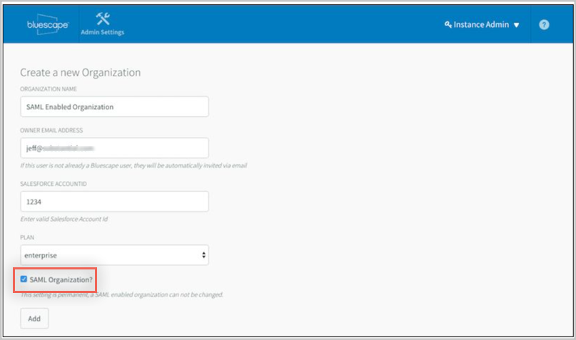
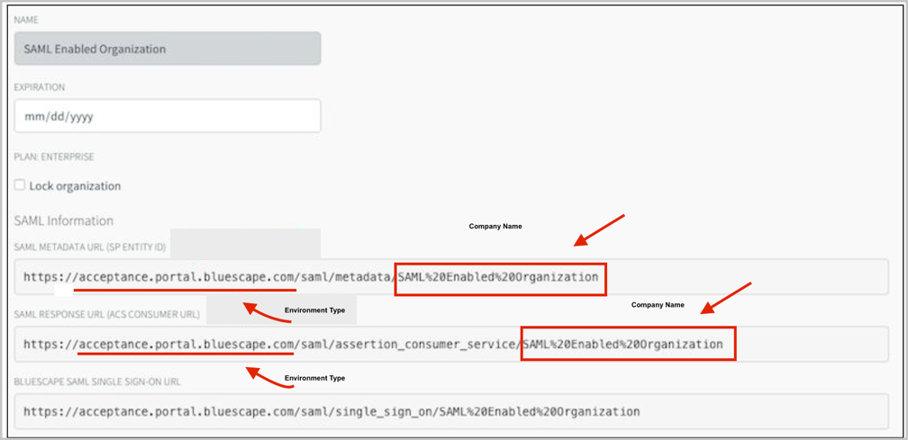
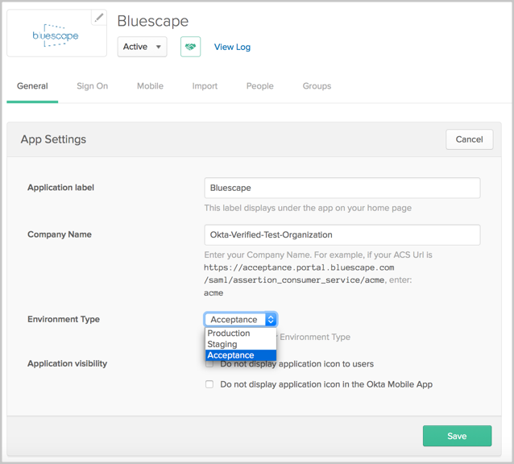
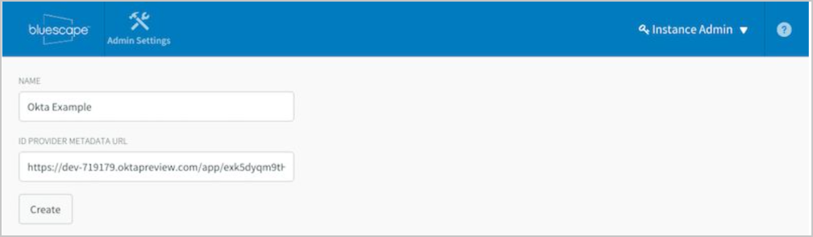
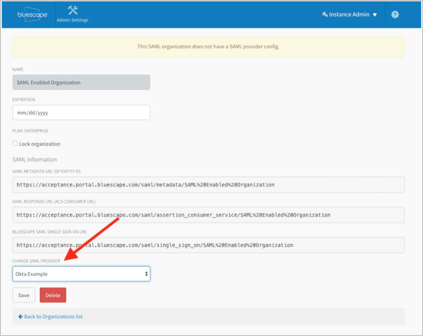

Login to Bluescape as Instance Admin.
Create a new SAML organization from instance admin.
Owner/Admin should be a current Bluescape user (they will to be able to edit the SAML organization information using their Bluescape login).
Check the SAML Organisation option. Note that this can only be done once, when the organisation is created.

Take note of the Bluescape org settings, as shown below:

In Okta, select the General tab for the Bluescape app, then click Edit.
Enter the values you saw in the Bluescape org settings into the corresponding fields:

Click Save.
In Bluescape, create a new SAML Provider:
ID Provider Metadata URL: Copy and paste the following into this field:
Sign in to the Okta Admin app to have this variable generated for you
Click Create.

In Bluescape, edit the Organization and add the new SAML Provider from the dropdown menu, then save the org:

Done!
Notes:
SP-initiated flows, IdP-initiated flows, and Just In Time (JIT) provisioning are all supported.